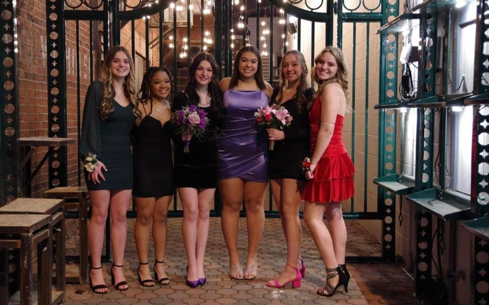
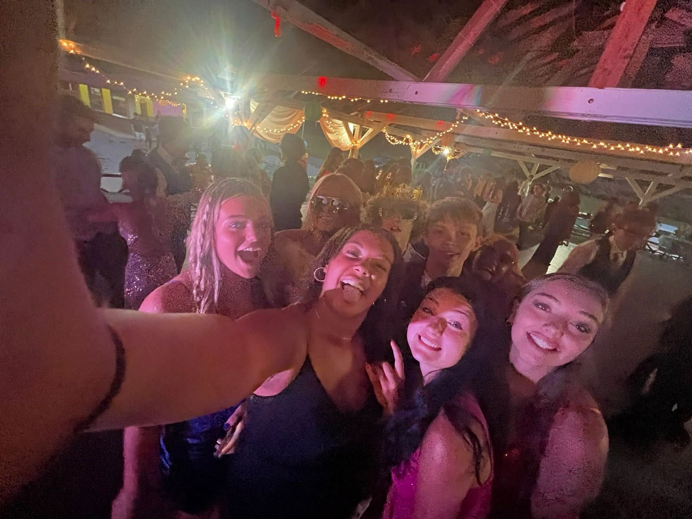

<!doctype html>
<html>
	<body style="background-color:#add8e6;"/>
<head>
<meta charset="utf-8">
<title>social.html</title>
</head>
<h1><center>Another Day, Another Slay!</center></h1>
<nav>

              <meta name="viewport" content="width=device-width, initial-scale=1">

<style>

body {

margin: 0;

font-family: Arial, Helvetica, sans-serif;

}

 

.topnav {

overflow: hidden;

background-color: #ff69b4;

}

 

.topnav a {

float: left;

color:#fff5fa ;

text-align: center;

padding: 14px 16px;

text-decoration: none;

font-size: 17px;

}

 

.topnav a:hover {

background-color: #ff8ac4;

color: black;

}

 

.topnav a.active {

background-color: #ffc7e3;

color: white;

}

</style>

</head>

<body>

 

<div class="topnav">

<a href="index.html">Home</a>

<a href="about.html">About</a>

<a href="goal.html">Goals</a>

<a class="active"  href="social.html">Social</a>

<a href="photos.html">Photos</a>
</nav>
	<center><h1><p>Beach Trip 2022!<br></h1></p><p></p>
<p><h3>This year’s beach trip was so much fun. I went with my friends May, Aub, and Ajah. I got super tan. We watched sunsets, and walked to the Dairy Queen every day. Doing everything at the beach is just better. I love showering after being sunburnt. My favorite thing is the KONA Ice truck. I go crazy when I hear the music blaring down the street. I don’t really enjoy doing a lot at the beach, I just like to spend time relaxing with my friends.  
</p></h3>  
<body>
	 
	
	    
																					 																		  
</body>
 <h1><p>	My Friends!</h1></p><p>
<h3>I love all of my friends so much. Not all of my friends are in here, however, each and every one is special to me in their own way. I love laughing and enjoying time with my friends. No matter what kind of situation we are in, good or bad, we always try and have a good time. I value my friends because they make happy and respected.<p></h3><br>
 
     
      																				  </center>
<body>
																				
																			 
</html>
